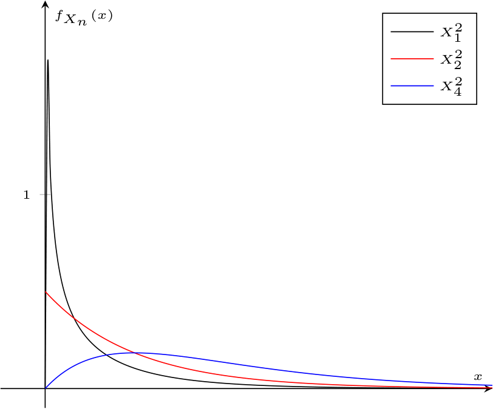
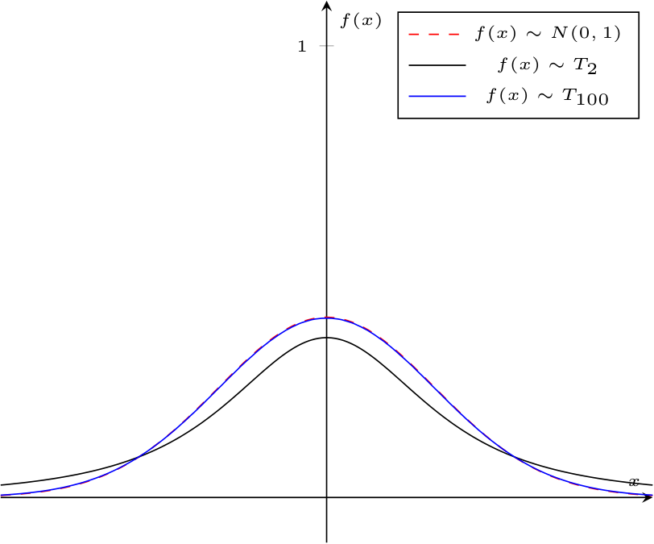

Dimostrazione - Teorema del limite centrale
Data la proposizione
Enunciato:
Considerando una successione di variabili casuali identicamente distribuite e indipendenti \( X_1, \ldots, X_n\) di valore atteso \( \mu\) e varianza \( \sigma^2\), si ha che la variabile casuale \[ T_n = \frac{X_1 + \ldots + X_n - n \cdot \mu}{\sigma \cdot \sqrt{n}} \] tende in distribuzione, per \( n \to +\infty\), ad una variabile causale gaussiana standard ovvero \[ P(T_n \leq a) \xrightarrow[n \to +\infty]{} F_Z(a) \qquad \forall a \in \mathbb{R} \ \text{e} \ Z \sim N(0, 1) \]
Dimostrazione:
Per dimostrare questo teorema, ipotizziamo che il valore atteso delle v. c. sia \( 0\) e la deviazione standard sia \( 1\) (per semplificare alcuni passaggi) e, dato che le v. c. \( X_i\) sono indipendenti e identicamente distribuite, si ha che \[ \phi_{X_1}(t) = \ldots = \phi_{X_n}(t) \] Funzione logaritmo della funzione generatrice Consideriamo quindi di definire la funzione \[ L(t) = \ln \left( \phi_{X_1}(t) \right) \] (considerando \( X_1\), ma valido per ognuna delle altre v. c.).
Allora si ha che \[ \begin{array}{ccl} L(0) & = & \ln \left( \phi_{X_1}(0) \right) \\ & = & \ln \left( E\left[ \mathrm{e}^{0 \cdot X_1} \right] \right) \\ & = & \ln \left( E\left[ 1 \right] \right) \\ & = & \ln \left( 1 \right) \\ & = & 0 \end{array} \] Considerando anche la derivata prima in \( t = 0\) si ha che \[ \begin{array}{ccl} \frac{d}{dt} L(0) & = & \frac{d}{dt} \ln \left( \phi_{X_1}(t) \right) \mid_{t = 0} \\ & \underset{\text{deriv. comp.}}{=} & \frac{d}{dt} \phi_{X_1}(t) \cdot \frac{1}{\phi_{X_1}(t)} \mid_{t = 0} \\ & = & \frac{d}{dt} \phi_{X_1}(0) \cdot \frac{1}{E\left[ \mathrm{e}^{0 \cdot X_1} \right]} \\ & = & \frac{d}{dt} \phi_{X_1}(0) \cdot \frac{1}{1} \\ & = & \frac{d}{dt} \phi_{X_1}(0) \\ & \underset{\text{mom. di ord. 1}}{=} & E[X_1] \\ & = & \mu \\ & = & 0 \end{array} \] e la derivata seconda in \( t = 0\) si ha che \[ \begin{array}{ccl} \frac{d^2}{dt^2} L(0) & = & \frac{d}{dt} \left( \frac{d}{dt} L(t) \right) \mid_{t = 0} \\ & = & \frac{d}{dt} \left( \frac{d}{dt} \phi_{X_1}(t) \cdot \frac{1}{\phi_{X_1}(t)} \right) \mid_{t = 0} \\ & = & \frac{d}{dt} \left( \frac{d}{dt} \phi_{X_1}(t) \cdot \left( \phi_{X_1}(t) \right)^{-1} \right) \mid_{t = 0} \\ & \underset{\text{deriv. prod.}}{=} & \underbrace{\frac{d^2}{dt^2} \phi_{X_1}(t)}_{E\left[(X_1)^2\right]} \cdot \underbrace{\left( \phi_{X_1}(t) \right)^{-1}}_{1} - \underbrace{\left( \phi_{X_1}(t) \right)^{-2}}_1 \cdot \underbrace{ \left( \frac{d}{dt} \phi_{X_1}(t) \right)^2}_{\left( E[X_1] \right)^2} \mid_{t = 0} \\ & = & E\left[(X_1)^2\right] - \left( E[X_1] \right)^2 \\ & = & Var(X_1) \\ & = & 1 \end{array} \] Considerazioni su cosa dimostrare Considerando \[ T_n = \frac{X_1 + \ldots + X_n}{\sqrt{n}} \] si vuole dimostrare che \begin{aligned} & \lim_{n \to +\infty} P(T_n \leq a) = F_Z(a) & \iff \\ & \lim_{n \to +\infty} F_{T_n}(a) = F_Z(a) & \iff \\ & \lim_{n \to +\infty} \phi_{T_n}(t) = \phi_{Z}(t) & \iff \\ & \lim_{n \to +\infty} \phi_{T_n}(t) = \mathrm{e}^{\frac{t^2}{2}} & \iff \\ & \lim_{n \to +\infty} \ln (\phi_{T_n}(t)) = \frac{t^2}{2} & \end{aligned} Funzione generatrice di \( T_n\) Considerando la variabile \( T_n\), calcolare funzione generatrice di \( T_n\) equivale a \[ \begin{array}{ccl} \phi_{T_n}(t) & = & \phi_{\sum_{k = 1}^n \frac{X_k}{\sqrt{n}}}(t) \\ & \underset{\text{indip.}}{=} & \phi_{\frac{X_1}{\sqrt{n}}}(t) \cdot \ldots \cdot \phi_{\frac{X_n}{\sqrt{n}}}(t) \\ & \underset{\text{ident. distr.}}{=} & \left( \phi_{\frac{X_1}{\sqrt{n}}}(t) \right)^n \\ & = & \left( E\left[ \mathrm{e}^{t \cdot \frac{X_1}{\sqrt{n}}} \right] \right)^n \\ & = & \left( E\left[ \mathrm{e}^{\frac{t}{\sqrt{n}} \cdot X_1} \right] \right)^n \\ & = & \left( \phi_{X_1}\left(\frac{t}{\sqrt{n}}\right) \right)^n \end{array} \] Considerazioni finali Considerando cosa si vuole dimostrare, ovvero che \begin{aligned} & \lim_{n \to +\infty} \ln (\phi_{T_n}(t)) = \frac{t^2}{2} & \end{aligned} è ora possibile sostituire a \( \phi_{T_n}(t)\) il risultato precedente, ovvero \[ \begin{array}{ccl} \lim_{n \to +\infty} \ln (\phi_{T_n}(t)) & = & \lim_{n \to +\infty} \ln \left( \left( \phi_{X_1}\left(\frac{t}{\sqrt{n}}\right) \right)^n \right) \\ & = & \lim_{n \to +\infty} n \cdot \ln \left(\phi_{X_1}\left(\frac{t}{\sqrt{n}}\right) \right) \\ & = & \lim_{n \to +\infty} n \cdot L\left(\frac{t}{\sqrt{n}}\right) \end{array} \] Ricordando che \( L(0) = 0\), trasformiamo il prodotto in una forma indeterminata \( \frac{0}{0}\), ovvero \begin{aligned} = \quad & \lim_{n \to +\infty} \frac{L\left(\frac{t}{\sqrt{n}}\right)}{n^{-1}} & = \end{aligned} a cui è possibile applicare De l'Hopital, ovvero \[ \begin{array}{ccl} \lim_{n \to +\infty} \ln (\phi_{T_n}(t)) & = & \lim_{n \to +\infty} \ln \left( \left( \phi_{X_1}\left(\frac{t}{\sqrt{n}}\right) \right)^n \right) \\ & = & \lim_{n \to +\infty} \frac{\frac{d}{dn} L\left(\frac{t}{\sqrt{n}}\right)}{\frac{d}{dn} n^{-1}} \\ & = & \lim_{n \to +\infty} \frac{L'\left(\frac{t}{\sqrt{n}}\right) \cdot t \cdot \left(- \frac{1}{2} \right) \cdot n^{-\frac{3}{2}}}{-n^{-2}} \\ & = & \lim_{n \to +\infty} \frac{L'\left(\frac{t}{\sqrt{n}}\right) \cdot \frac{t}{2}}{n^{-\frac{1}{2}}} \end{array} \] che è anch'essa una forma indeterminata \( \frac{0}{0}\) per cui è possibile applicare nuovamente De l'Hopital, ovvero \[ \begin{array}{ccl} \lim_{n \to +\infty} \ln (\phi_{T_n}(t)) & = & \lim_{n \to +\infty} \frac{\frac{d}{dn} \left( L'\left(\frac{t}{\sqrt{n}}\right) \cdot \frac{t}{2} \right)}{\frac{d}{dn} \left( n^{-\frac{1}{2}} \right) } \\ & = & \lim_{n \to +\infty} \frac{\frac{t}{2} \cdot L''\left(\frac{t}{\sqrt{n}}\right) \cdot t \cdot \left( - \frac{1}{2} \right) \cdot n^{-\frac{3}{2}}}{ -\frac{1}{2} \cdot n^{-\frac{3}{2}} } \\ & = & \lim_{n \to +\infty} \frac{t}{2} \cdot L''\left(\frac{t}{\sqrt{n}}\right) \cdot t \\ & = & \lim_{n \to +\infty} \frac{t^2}{2} \cdot L''\left(\frac{t}{\sqrt{n}}\right) \\ & = & \frac{t^2}{2} \cdot \underbrace{L''(0)}_1 \\ & = & \frac{t^2}{2} \end{array} \] che dimostra il teorema.
Allora si ha che \[ \begin{array}{ccl} L(0) & = & \ln \left( \phi_{X_1}(0) \right) \\ & = & \ln \left( E\left[ \mathrm{e}^{0 \cdot X_1} \right] \right) \\ & = & \ln \left( E\left[ 1 \right] \right) \\ & = & \ln \left( 1 \right) \\ & = & 0 \end{array} \] Considerando anche la derivata prima in \( t = 0\) si ha che \[ \begin{array}{ccl} \frac{d}{dt} L(0) & = & \frac{d}{dt} \ln \left( \phi_{X_1}(t) \right) \mid_{t = 0} \\ & \underset{\text{deriv. comp.}}{=} & \frac{d}{dt} \phi_{X_1}(t) \cdot \frac{1}{\phi_{X_1}(t)} \mid_{t = 0} \\ & = & \frac{d}{dt} \phi_{X_1}(0) \cdot \frac{1}{E\left[ \mathrm{e}^{0 \cdot X_1} \right]} \\ & = & \frac{d}{dt} \phi_{X_1}(0) \cdot \frac{1}{1} \\ & = & \frac{d}{dt} \phi_{X_1}(0) \\ & \underset{\text{mom. di ord. 1}}{=} & E[X_1] \\ & = & \mu \\ & = & 0 \end{array} \] e la derivata seconda in \( t = 0\) si ha che \[ \begin{array}{ccl} \frac{d^2}{dt^2} L(0) & = & \frac{d}{dt} \left( \frac{d}{dt} L(t) \right) \mid_{t = 0} \\ & = & \frac{d}{dt} \left( \frac{d}{dt} \phi_{X_1}(t) \cdot \frac{1}{\phi_{X_1}(t)} \right) \mid_{t = 0} \\ & = & \frac{d}{dt} \left( \frac{d}{dt} \phi_{X_1}(t) \cdot \left( \phi_{X_1}(t) \right)^{-1} \right) \mid_{t = 0} \\ & \underset{\text{deriv. prod.}}{=} & \underbrace{\frac{d^2}{dt^2} \phi_{X_1}(t)}_{E\left[(X_1)^2\right]} \cdot \underbrace{\left( \phi_{X_1}(t) \right)^{-1}}_{1} - \underbrace{\left( \phi_{X_1}(t) \right)^{-2}}_1 \cdot \underbrace{ \left( \frac{d}{dt} \phi_{X_1}(t) \right)^2}_{\left( E[X_1] \right)^2} \mid_{t = 0} \\ & = & E\left[(X_1)^2\right] - \left( E[X_1] \right)^2 \\ & = & Var(X_1) \\ & = & 1 \end{array} \] Considerazioni su cosa dimostrare Considerando \[ T_n = \frac{X_1 + \ldots + X_n}{\sqrt{n}} \] si vuole dimostrare che \begin{aligned} & \lim_{n \to +\infty} P(T_n \leq a) = F_Z(a) & \iff \\ & \lim_{n \to +\infty} F_{T_n}(a) = F_Z(a) & \iff \\ & \lim_{n \to +\infty} \phi_{T_n}(t) = \phi_{Z}(t) & \iff \\ & \lim_{n \to +\infty} \phi_{T_n}(t) = \mathrm{e}^{\frac{t^2}{2}} & \iff \\ & \lim_{n \to +\infty} \ln (\phi_{T_n}(t)) = \frac{t^2}{2} & \end{aligned} Funzione generatrice di \( T_n\) Considerando la variabile \( T_n\), calcolare funzione generatrice di \( T_n\) equivale a \[ \begin{array}{ccl} \phi_{T_n}(t) & = & \phi_{\sum_{k = 1}^n \frac{X_k}{\sqrt{n}}}(t) \\ & \underset{\text{indip.}}{=} & \phi_{\frac{X_1}{\sqrt{n}}}(t) \cdot \ldots \cdot \phi_{\frac{X_n}{\sqrt{n}}}(t) \\ & \underset{\text{ident. distr.}}{=} & \left( \phi_{\frac{X_1}{\sqrt{n}}}(t) \right)^n \\ & = & \left( E\left[ \mathrm{e}^{t \cdot \frac{X_1}{\sqrt{n}}} \right] \right)^n \\ & = & \left( E\left[ \mathrm{e}^{\frac{t}{\sqrt{n}} \cdot X_1} \right] \right)^n \\ & = & \left( \phi_{X_1}\left(\frac{t}{\sqrt{n}}\right) \right)^n \end{array} \] Considerazioni finali Considerando cosa si vuole dimostrare, ovvero che \begin{aligned} & \lim_{n \to +\infty} \ln (\phi_{T_n}(t)) = \frac{t^2}{2} & \end{aligned} è ora possibile sostituire a \( \phi_{T_n}(t)\) il risultato precedente, ovvero \[ \begin{array}{ccl} \lim_{n \to +\infty} \ln (\phi_{T_n}(t)) & = & \lim_{n \to +\infty} \ln \left( \left( \phi_{X_1}\left(\frac{t}{\sqrt{n}}\right) \right)^n \right) \\ & = & \lim_{n \to +\infty} n \cdot \ln \left(\phi_{X_1}\left(\frac{t}{\sqrt{n}}\right) \right) \\ & = & \lim_{n \to +\infty} n \cdot L\left(\frac{t}{\sqrt{n}}\right) \end{array} \] Ricordando che \( L(0) = 0\), trasformiamo il prodotto in una forma indeterminata \( \frac{0}{0}\), ovvero \begin{aligned} = \quad & \lim_{n \to +\infty} \frac{L\left(\frac{t}{\sqrt{n}}\right)}{n^{-1}} & = \end{aligned} a cui è possibile applicare De l'Hopital, ovvero \[ \begin{array}{ccl} \lim_{n \to +\infty} \ln (\phi_{T_n}(t)) & = & \lim_{n \to +\infty} \ln \left( \left( \phi_{X_1}\left(\frac{t}{\sqrt{n}}\right) \right)^n \right) \\ & = & \lim_{n \to +\infty} \frac{\frac{d}{dn} L\left(\frac{t}{\sqrt{n}}\right)}{\frac{d}{dn} n^{-1}} \\ & = & \lim_{n \to +\infty} \frac{L'\left(\frac{t}{\sqrt{n}}\right) \cdot t \cdot \left(- \frac{1}{2} \right) \cdot n^{-\frac{3}{2}}}{-n^{-2}} \\ & = & \lim_{n \to +\infty} \frac{L'\left(\frac{t}{\sqrt{n}}\right) \cdot \frac{t}{2}}{n^{-\frac{1}{2}}} \end{array} \] che è anch'essa una forma indeterminata \( \frac{0}{0}\) per cui è possibile applicare nuovamente De l'Hopital, ovvero \[ \begin{array}{ccl} \lim_{n \to +\infty} \ln (\phi_{T_n}(t)) & = & \lim_{n \to +\infty} \frac{\frac{d}{dn} \left( L'\left(\frac{t}{\sqrt{n}}\right) \cdot \frac{t}{2} \right)}{\frac{d}{dn} \left( n^{-\frac{1}{2}} \right) } \\ & = & \lim_{n \to +\infty} \frac{\frac{t}{2} \cdot L''\left(\frac{t}{\sqrt{n}}\right) \cdot t \cdot \left( - \frac{1}{2} \right) \cdot n^{-\frac{3}{2}}}{ -\frac{1}{2} \cdot n^{-\frac{3}{2}} } \\ & = & \lim_{n \to +\infty} \frac{t}{2} \cdot L''\left(\frac{t}{\sqrt{n}}\right) \cdot t \\ & = & \lim_{n \to +\infty} \frac{t^2}{2} \cdot L''\left(\frac{t}{\sqrt{n}}\right) \\ & = & \frac{t^2}{2} \cdot \underbrace{L''(0)}_1 \\ & = & \frac{t^2}{2} \end{array} \] che dimostra il teorema.
Definizione - Valore atteso del limite centrale
Considerando la variabile casuale \[ T_n = \frac{X_1 + \ldots + X_n - n \cdot \mu}{\sigma \cdot \sqrt{n}} \] del limite centrale, si ha che per calcolare il valore atteso di \( T_n\), è possibile dividerlo in \[ \begin{array}{ccl} E[T_n] & = & E\left[ \frac{X_1 + \ldots + X_n - n \cdot \mu}{\sigma \cdot \sqrt{n}} \right] \\ & = & \frac{1}{\sigma \cdot \sqrt{n}} \cdot E\left[ X_1 + \ldots + X_n - n \cdot \mu \right] \\ & = & \frac{E\left[ X_1 + \ldots + X_n \right] - n \cdot \mu}{\sigma \cdot \sqrt{n}} \end{array} \] È ora necessario calcolare il valore atteso di \( X_1 + \ldots + X_n\), ovvero \[ \begin{array}{ccl} E[X_1 + \ldots + X_n] & = & E\left[ \sum_{i = 1}^n X_i \right] \\ & = & \sum_{i = 1}^{n} E[X_i] \\ & = & \sum_{i = 1}^{n} \mu \\ & = & n \cdot \mu \end{array} \] Sostituendo tale valore al calcolo precedente si ottiene \[ \begin{array}{ccl} E[T_n] & = & \frac{E\left[ X_1 + \ldots + X_n \right] - n \cdot \mu}{\sigma \cdot \sqrt{n}} \\ & = & \frac{n \cdot \mu - n \cdot \mu}{\sigma \cdot \sqrt{n}} \\ & = & 0 \end{array} \]
Definizione - Varianza del limite centrale
Per calcolare la varianza di \( T_n\), consideriamo \[ \begin{array}{ccl} Var(T_n) & = & Var\left( \frac{X_1 + \ldots + X_n - n \cdot \mu}{\sigma \cdot \sqrt{n}} \right) \\ & = & \frac{1}{\sigma^2 \cdot n} \cdot Var\left( X_1 + \ldots + X_n \right) \end{array} \] dato che \[ Var(\alpha \cdot X + \beta) = \alpha^2 \cdot Var(X) \] e \[ \begin{array}{ccl} Var(T_n) & = & \frac{1}{\sigma^2 \cdot n} \cdot Var\left( X_1 + \ldots + X_n \right) \\ & \underset{\text{indip.}}{=} & \frac{1}{\sigma^2 \cdot n} \cdot \sum_{i = 1}^n Var(X_i) \\ & = & \frac{1}{\sigma^2 \cdot n} \cdot n \cdot \sigma^2 \\ & = & 1 \end{array} \]
Definizione - Conseguenza del limite centrale - Approssimazione di v. c. binomiali
Considerando una variabile casuale binomiale di parametri \( n\) e \( p\) (con \( n\) "molto maggiori" di \( 1\)) \[ Y \sim B(n, p) \] si ha che è possibile vederla come somma di \( n\) variabili casuali di Bernoulli indipendenti, ovvero \[ Y = \sum_{i = 1}^n X_i \qquad \text{con} \ X_i \sim Be(p) \] che, in quanto variabili di Bernoulli di parametro \( p\), avranno tutte valore atteso pari a \( p\) e varianza pari a \( p \cdot q\).
Considerando ora il teorema del limite centrale, si ha che \[ \frac{Y - n \cdot p}{\sqrt{p \cdot q} \cdot \sqrt{n}} \underset{n \to +\infty}{\sim} N(0, 1) \] Ricordando però le regole per ricondursi alla gaussiana standard (ovvero data \( G \sim N(\mu, \sigma)\), si ha che \( \frac{G - \mu}{\sigma} \sim N(0, 1)\)) si ha che è possibile dire che per \( n\) "abbastanza grandi" è valida l'approssimazione \[ Y \sim B(n, p) \sim N(n \cdot p, \sqrt{n \cdot p \cdot q}) \]
Considerando ora il teorema del limite centrale, si ha che \[ \frac{Y - n \cdot p}{\sqrt{p \cdot q} \cdot \sqrt{n}} \underset{n \to +\infty}{\sim} N(0, 1) \] Ricordando però le regole per ricondursi alla gaussiana standard (ovvero data \( G \sim N(\mu, \sigma)\), si ha che \( \frac{G - \mu}{\sigma} \sim N(0, 1)\)) si ha che è possibile dire che per \( n\) "abbastanza grandi" è valida l'approssimazione \[ Y \sim B(n, p) \sim N(n \cdot p, \sqrt{n \cdot p \cdot q}) \]
Nota bene - \( n\) "abbastanza grandi" per casi pratici
Nei casi pratici, l'approssimazione della binomiale è valida per \( n\) maggiori uguali a \( 30\).
Definizione - Approssimazione alla continuità (o correzione di continuità)
Consideriamo le v. c. \( D \sim B(n, p)\) (con \( n\) "abbastanza grande") e \( M \sim N(n \cdot p, \sqrt{n \cdot p \cdot q})\) (ovvero è possibile approssimare \( D\) con \( M\)) e consideriamo di voler calcolare la probabilità che assumano un certo valore \( k\).
Nel caso della v. c. \( D\) varrà \[ P(D = k) = C_{n, k} \cdot p^k \cdot q^{n - k} \] mentre per \( M\) si avrà \[ P(M = k) = \int_k^k f_M(x) \ dx = 0 \] Un'idea per "recuperare" questa differenza può essere seguire le seguenti regole di approssimazione:
Nel caso della v. c. \( D\) varrà \[ P(D = k) = C_{n, k} \cdot p^k \cdot q^{n - k} \] mentre per \( M\) si avrà \[ P(M = k) = \int_k^k f_M(x) \ dx = 0 \] Un'idea per "recuperare" questa differenza può essere seguire le seguenti regole di approssimazione:
- per calcolare la probabilità che \( D\) assuma un certo valore \( k\), consideriamo di calcolare la probabilità che \( M\) sia compresa tra \( k - \frac{1}{2}\) e \( k + \frac{1}{2}\), ovvero \[ P(D = k) = P\left(k - \frac{1}{2} \lt M \leq k + \frac{1}{2}\right) \]
- per calcolare la probabilità che \( D\) sia minore o uguale a \( k\), consideriamo di calcolare la probabilità che \( M\) sia minore o uguale di \( k + \frac{1}{2}\), ovvero \[ P(D \leq k) = P(M \leq k + \frac{1}{2}) \]
- per calcolare la probabilità che \( D\) sia minore a \( k\), consideriamo di calcolare la probabilità che \( M\) sia minore o uguale di \( k - \frac{1}{2}\), ovvero \[ P(D \lt k) = P(M \leq k - \frac{1}{2}) \]
- per calcolare la probabilità che \( D\) sia maggiore o uguale a \( k\), consideriamo di calcolare la probabilità che \( M\) sia maggiore o uguale di \( k - \frac{1}{2}\), ovvero \[ P(D \geq k) = P(M \geq k - \frac{1}{2}) \]
- per calcolare la probabilità che \( D\) sia maggiore a \( k\), consideriamo di calcolare la probabilità che \( M\) sia maggiore o uguale di \( k + \frac{1}{2}\), ovvero \[ P(D \gt k) = P(M \geq k + \frac{1}{2}) \]
Definizione - Conseguenza del limite centrale - Approssimazione della somma di v. c.
Considerando la somma di \( n\) variabili casuali indipendenti di valore atteso \( \mu\) e varianza \( \sigma^2\) \[ S_n = X_1 + \ldots + X_n \] (il cui valore atteso è \( n \cdot \mu\) e la dev. standard è \( \sqrt{n} \cdot \sigma\)) per il teorema del limite centrale, si ha che \[ \frac{S_n - n \cdot \mu}{\sigma \cdot \sqrt{n}} \underset{n \to +\infty}{\sim} N(0, 1) \] Ricordando però le regole per ricondursi alla gaussiana standard (ovvero data \( G \sim N(\mu, \sigma)\), si ha che \( \frac{G - \mu}{\sigma} \sim N(0, 1)\)) si ha che è possibile dire che per \( n\) "abbastanza grandi" è valida l'approssimazione \[ S_n \sim N(n \cdot \mu, \sigma \cdot \sqrt{n}) \]
Definizione - Conseguenza del limite centrale - Approssimazione della media campionaria di v. c.
Considerando la media di \( n\) variabili casuali indipendenti di valore atteso \( \mu\) e varianza \( \sigma^2\) \[ \overline{X} = \frac{X_1 + \ldots + X_n}{n} \] è possibile calcolare il valore atteso di \( \overline{X}\), ovvero \[ \begin{array}{ccl} E[\overline{X}] & = & E\left[ \frac{X_1 + \ldots + X_n}{n} \right] \\ & = & \frac{1}{n} \cdot E[X_1 + \ldots + X_n] \\ & = & \frac{1}{n} \cdot n \cdot \mu \\ & = & \mu \end{array} \] e la varianza è uguale a \[ \begin{array}{ccl} Var(\overline{X}) & = & Var\left( \frac{X_1 + \ldots + X_n}{n} \right) \\ & = & \frac{1}{n^2} \cdot Var(X_1 + \ldots + X_n) \\ & = & \frac{1}{n^2} \cdot n \cdot \sigma^2 \\ & = & \frac{\sigma^2}{n} \end{array} \] Considerando ora il teorema del limite centrale, si ha che \begin{aligned} & \frac{X_1 + \ldots + X_n - n \cdot \mu}{\sigma \cdot \sqrt{n}} \underset{n \to +\infty}{\sim} N(0, 1) & \iff \\ & \frac{\frac{1}{n}}{\frac{1}{n}} \cdot \frac{X_1 + \ldots + X_n - n \cdot \mu}{\sigma \cdot \sqrt{n}} \underset{n \to +\infty}{\sim} N(0, 1) & \iff \\ & \frac{\frac{X_1 + \ldots + X_n}{n} - \mu}{\sigma \cdot \frac{1}{\sqrt{n}}} \underset{n \to +\infty}{\sim} N(0, 1) & \iff \end{aligned} Ricordando però le regole per ricondursi alla gaussiana standard (ovvero data \( G \sim N(\mu, \sigma)\), si ha che \( \frac{G - \mu}{\sigma} \sim N(0, 1)\)) si ha che è possibile dire che per \( n\) "abbastanza grandi" è valida l'approssimazione \[ \overline{X} \sim N(\mu, \frac{\sigma}{\sqrt{n}}) \]
Definizione - Variabile casuale chi-quadro a \( n\) gradi di libertà
Una variabile casuale continua \( X\), si definisce chi-quadro ad \( n\) gradi di libertà (ovvero \( X \sim X^2_n\)) se è la somma di \( n\) variabili casuali normali standard elevate al quadrato, ovvero \[ X = \sum_{k = 1}^n ( Z_k )^2 \qquad \text{con} \ Z_k \sim N(0, 1) \ \text{indipendenti} \] Funzione di densità La funzione di densità di questa variabile casuale risulta essere particolarmente complicata.
Oltre al fatto che è maggiore o uguale a \( 0\), ovvero \[ X^2_n \geq 0 \] essa è caratterizzata dal seguente grafico Valore atteso Il valore atteso di una variabile casuale chi-quadro a \( n\) gradi di libertà è calcolabile come \[ \begin{array}{ccl} E[X] & = & E\left[ \sum_{k = 1}^n ( Z_k )^2 \right] \\ & = & \sum_{k = 1}^n E\left[ ( Z_k )^2 \right] \\ & = & \sum_{k = 1}^n \underbrace{Var(Z_k)}_{1} + ( \underbrace{E[Z_k]}_0 )^2 \\ & = & \sum_{k = 1}^n 1 \\ & = & n \end{array} \] Varianza La varianza di una variabile casuale chi-quadro a \( n\) gradi di libertà è calcolabile come \[ \begin{array}{ccl} Var(X) & = & Var\left( \sum_{k = 1}^n ( Z_k )^2 \right) \\ & \underset{\text{indip.}}{=} & \sum_{k = 1}^n Var\left( (Z_k)^2 \right) \end{array} \] Occorre quindi calcolare la varianza di \( (Z_k)^2\), ovvero \[ \begin{array}{ccl} Var\left( (Z_k)^2 \right) & = & E\left[ \left( (Z_k )^2 \right)^2 \right] - \underbrace{\left( E\left[ (Z_k )^2 \right] \right)^2}_{1^2} \\ & = & E\left[ (Z_k )^4 \right] - 1 \\ & = & \frac{d^4}{dt^4} \phi_{Z_k}(t) \mid_{t = 0} - 1 \\ & = & \frac{d^4}{dt^4} \left( \mathrm{e}^{\frac{t^2}{2}} \right) \mid_{t = 0} - 1 \\ & = & \frac{d^3}{dt^3} \left( t \cdot \mathrm{e}^{\frac{t^2}{2}} \right) \mid_{t = 0} - 1 \\ & = & \frac{d^2}{dt^2} \left( \mathrm{e}^{\frac{t^2}{2}} + t^2 \cdot \mathrm{e}^{\frac{t^2}{2}} \right) \mid_{t = 0} - 1 \\ & = & \frac{d}{dt} \left( t \cdot \mathrm{e}^{\frac{t^2}{2}} + 2 \cdot t \cdot \mathrm{e}^{\frac{t^2}{2}} + t^3 \cdot \mathrm{e}^{\frac{t^2}{2}} \right) \mid_{t = 0} - 1 \\ & = & \frac{d}{dt} \left( 3t \cdot \mathrm{e}^{\frac{t^2}{2}} + t^3 \cdot \mathrm{e}^{\frac{t^2}{2}} \right) \mid_{t = 0} - 1 \\ & = & \left( 3 \cdot \mathrm{e}^{\frac{t^2}{2}} + 3t^2 \cdot \mathrm{e}^{\frac{t^2}{2}} + 3 t^2 \cdot \mathrm{e}^{\frac{t^2}{2}} + t^4 \cdot \mathrm{e}^{\frac{t^2}{2}} \right) \mid_{t = 0} - 1 \\ & = & 3 - 1 \\ & = & 2 \end{array} \] Sostituendo tale valore al calcolo per la varianza di \( X\) si ottiene \[ \begin{array}{ccl} Var(X) & = & \sum_{k = 1}^n Var\left( (Z_k)^2 \right) \\ & = & \sum_{k = 1}^n 2 \\ & = & 2 \cdot n \end{array} \] Proprietà di riproducibilità Considerando due variabili chi-quadro indipendenti \( X_1\) e \( X_2\), tali che \( X_1 \sim X_n\) e \( X_2 \sim X_m\), si ha che \[ X_1 + X_2 \sim X^2_{n + m} \] Approssimazione ad una v. c. normale standard Considerando \( n \to +\infty\), è possibile approssimare una variabile casuale chi-quadro ad una v. c. normale standard grazie al teorema del limite centrale.
Oltre al fatto che è maggiore o uguale a \( 0\), ovvero \[ X^2_n \geq 0 \] essa è caratterizzata dal seguente grafico

Definizione - Variabile casuale \( t\) di Student
Una variabile casuale continua \( X\), si definisce \( t\) di Student a \( n\) gradi di libertà (ovvero \( X \sim T_n\)) se considerando \( Z \sim N(0, 1)\) e \( C_n \sim X^2_n\) indipendenti, si ha che \[ X = \frac{Z}{\sqrt{\frac{C_n}{n}}} \] secondo il teorema del limite centrale. Funzione di densità La funzione di densità di questa variabile casuale risulta essere particolarmente incomprensibile. Oltre al fatto che è maggiore o uguale a \( 0\), ovvero \[ X^2_k \geq 0 \] essa è caratterizzata dal seguente grafico Approssimazione ad una v. c. normale standard Considerando \( n \to +\infty\), è possibile approssimare una variabile casuale \( t\) di Student ad una v. c. normale standard grazie al teorema del limite centrale.
